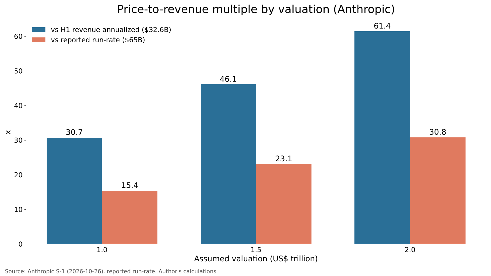
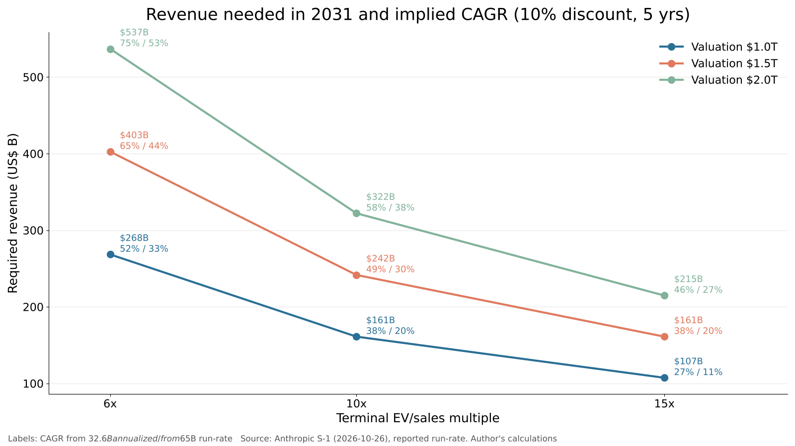

Will the Anthropic and OpenAI IPOs succeed? Testing valuation and the impact on SoftBank Group with numbers
On October 26, 2026, Anthropic publicly filed its S-1 registration statement with the U.S. Securities and Exchange Commission, setting its Nasdaq listing process in motion.
The question here is: "How much revenue growth does a $1.5–2.0 trillion valuation assume, and how much does SoftBank Group's net asset value move when OpenAI's valuation rises or falls?"
I define IPO "success" not by the first-day pop but by whether the share price a few years later justifies the listing valuation, and check it against primary filings and academic data.

Question and background
According to Anthropic's S-1, the shares will list on the Nasdaq Global Select Market under the ticker "ANT" [1]. The price range was blank at filing; Goldman Sachs and Morgan Stanley lead the syndicate, which also includes the U.S. securities arms of Mizuho and MUFG [1]. Press reports put the raise at over $100 billion, the valuation at $1.5–2.0 trillion, and the listing around mid-November [7][8].
OpenAI raised $122 billion in March 2026 at a reported post-money valuation of $852 billion [9]. In June 2026 it was reported to have submitted IPO paperwork to the SEC confidentially [10], but in September CEO Sam Altman ruled out a listing this year, and the company was reported to be in talks to raise at least $30 billion in bridge financing at about $1.4 trillion [11].
For investors in Japan, the key point is that SoftBank Group (SBG) owns about 13% of OpenAI. SBG decided on a $30 billion follow-on investment in February 2026 and disclosed that, once paid in, its stake would be about 13% and its cumulative investment $64.6 billion [2]. As of December 2025, cumulative investment was $30 billion for a stake of about 11% [3].
Data and method
The numbers and calculations used are listed below; all are saved in data.json.
First, Anthropic's revenue comes from the S-1. Revenue for the first half of 2026 (January–June) was $16.286 billion, versus $1.163 billion a year earlier, and full-year 2025 revenue was $4.585 billion [1]. Doubling first-half revenue gives an annualized figure of $32.57 billion. Separately, press reports say the annualized run-rate exceeded $65 billion at the end of July [12]. The latter better reflects recent momentum but is not audited, so I run the calculations from both starting points.
Second, the revenue multiple is valuation ÷ revenue.
Third, I back out the revenue needed to justify the valuation. I assume enterprise value in five years (2031) equals today's valuation compounded at 10% a year. Required revenue = valuation × 1.1^5 ÷ terminal revenue multiple; required CAGR = (required revenue ÷ starting revenue)^(1/5) − 1. The 10% is a placeholder for the expected equity return; the sensitivity analysis also tests 8% and 12%.
Fourth, the impact on SBG is "13% × OpenAI valuation" divided by SBG's net asset value (NAV) and market capitalization. NAV was $457.3 billion, the share price $37.72, and shares outstanding excluding treasury stock about 5.699 billion, all as of June 30, 2026 [4]. Market cap, calculated from these, is about $214.9 billion (converted at 1 USD = 158.10 JPY).
Fifth, post-IPO share performance is checked against the U.S. IPO statistics published by Professor Jay Ritter of the University of Florida [5][6].
Results
Anthropic's revenue multiples are as follows.
| Assumed valuation | vs annualized revenue ($32.57B) | vs run-rate ($65B) |
|---|---|---|
| $1.0T | 30.7x | 15.4x |
| $1.5T | 46.1x | 23.1x |
| $2.0T | 61.4x | 30.8x |

The S-1 income statement is easy to misread from the headline numbers alone. The net loss for the first half of 2026 was $80.748 billion, but $72.388 billion of it was a non-cash loss from fair-value changes on convertible notes and similar instruments [1]. The operating loss was only $0.693 billion, and the company's adjusted operating income was a positive $1.618 billion [1]. Cash and short-term investments stood at $131.651 billion at June 30 [1]. However, capital spending on AI infrastructure (reportedly $9 billion in the first half) and cloud contracts reportedly worth about $430 billion will become heavy fixed costs [7][8]. The risk factors run from page 26 to page 119 [1].
The impact on SBG is as follows.
| OpenAI valuation | Value of SBG's 13% stake | Multiple of $64.6B cumulative cost | Share of NAV | Share of market cap |
|---|---|---|---|---|
| $0.6T | $78.0B | 1.21x | 17% | 36% |
| $0.852T | $110.8B | 1.71x | 24% | 52% |
| $1.0T | $130.0B | 2.01x | 28% | 60% |
| $1.4T | $182.0B | 2.82x | 40% | 85% |
| $2.0T | $260.0B | 4.02x | 57% | 121% |
If OpenAI's valuation moves from $1.0 trillion to $1.4 trillion, SBG's stake gains about $52 billion, a little over 11% of NAV. Conversely, a fall to $0.6 trillion would cut about $32.8 billion relative to the March 2026 valuation.
Sensitivity analysis
I varied four inputs: valuation, terminal revenue multiple, discount rate and starting revenue.
| Valuation | Terminal multiple | Discount rate | Required 2031 revenue | Required CAGR (from annualized) | Required CAGR (from run-rate) |
|---|---|---|---|---|---|
| $1.0T | 6x | 10% | $268.4B | 52% | 33% |
| $1.0T | 10x | 10% | $161.1B | 38% | 20% |
| $1.0T | 15x | 10% | $107.4B | 27% | 11% |
| $1.5T | 6x | 10% | $402.6B | 65% | 44% |
| $1.5T | 10x | 10% | $241.6B | 49% | 30% |
| $1.5T | 15x | 10% | $161.1B | 38% | 20% |
| $2.0T | 6x | 10% | $536.8B | 75% | 53% |
| $2.0T | 10x | 10% | $322.1B | 58% | 38% |
| $2.0T | 15x | 10% | $214.7B | 46% | 27% |
| $1.5T | 10x | 8% | $220.4B | 47% | 28% |
| $1.5T | 10x | 12% | $264.4B | 52% | 32% |

In the central case (valuation $1.5 trillion, terminal 10x, discount rate 10%), revenue of about $240 billion is needed in 2031. That means 30% annual growth for five years from the run-rate, or 49% from first-half annualized revenue. The terminal multiple matters most: required revenue differs by 2.5 times between 6x and 15x. Moving the discount rate by 2 points changes the required growth rate by only 2–3 points.
Discussion
Whether the IPO "succeeds" needs to be split into two questions.
The first is the first-day move. In Ritter's data, the average first-day return for U.S. IPOs from 1980 to 2025 was 19.0%, and 29.3% in 2025 [5]. When demand is strong, the environment favors a first-day rise.
The second is performance over the following years. The 9,253 companies that went public from 1980 to 2024 earned an average three-year return of 19.1%, but trailed the market by 20.5 points [6]. Large IPOs with sales of $1 billion or more trailed the market by only 2.1 points, and tech companies with sales of $100 million or more beat it by 13.7 points [6]. Anthropic's scale is closer to the latter. Still, the historical data contains almost no listings at a $32.5 billion revenue scale, so it cannot be applied directly.
There is an opposing view. AI demand is sensitive to the economy and to power constraints, and if the performance gap between models narrows, price competition follows. In that case the terminal multiple could plausibly drift toward 6x. Justifying a $2.0 trillion valuation would then require 53% annual growth for five years even from the run-rate, meaning the listing price was expensive. The path by which IPO "success" turns into "failure" sits in the upper-left of this table.
For OpenAI, a traded Anthropic share price creates a yardstick. If Anthropic's shares hold a high multiple after listing, OpenAI's $1.4 trillion valuation gains support. If they fall sharply, OpenAI's funding terms could tighten. For SBG, this linkage is the biggest variable. SBG arranged a $40 billion bridge loan to fund its OpenAI investment and borrowed a further $10 billion in July [4]. Its loan-to-value ratio (LTV) was a low 13.0% at June 30 [4], but asset concentration is rising.
The data limits should be stated. The run-rate, capex and cloud contract figures are from press reports, and the corresponding S-1 passages were blank in the version I checked [1]. OpenAI has no audited revenue disclosure. SBG's market cap is calculated from the June 30 share price and differs from current levels.
Three things could change the conclusion: the price range in an amended S-1, revenue growth in the first quarter after listing, and the valuation of OpenAI's next funding round.
Conclusion
In terms of the first-day move, Anthropic's IPO may well be supported by demand. But "success" over a multi-year horizon, even at a $1.5 trillion valuation, assumes roughly 30% annual growth from the run-rate for five years and a terminal valuation of 10 times revenue. That is not an impossible number, but it is not a comfortable one either. For SBG, every $400 billion move in OpenAI's valuation moves NAV by about 11%. The outcome of these IPOs is tied not only to two AI companies but directly to the value of assets held by investors in Japan.
How I see it
I see this valuation as still cheap. Whether it is $1.5 trillion or $2 trillion, I do not feel it is too high a price for a company I do not choose on quarterly profits.
If both companies list successfully, I think SoftBank Group's shares will rise sharply. As the numbers above show, its NAV moves a great deal when OpenAI's valuation moves. Still, I do not hold a single SoftBank share. My money sits in AI companies I chose myself.
I intend to buy around ¥10 million (about $63,000) of Anthropic in the stock market on listing day. In the prospectus I look first at revenue, profit and market value, and I have decided that nothing written there will be a reason to stop buying.
As the sensitivity analysis shows, the conditions for success leave little room to spare. Even so, I will go in on the assumption of holding for the long term, not for a few years.
Sources
- Anthropic, PBC "Form S-1 Registration Statement" 2026-10-26 https://www.sec.gov/Archives/edgar/data/0002130357/000162828026067168/anthropicpbc-sx1.htm
- SoftBank Group "Follow-on Investments in OpenAI" 2026-02-27 https://group.softbank/en/news/press/20260227
- SoftBank Group "Completion of Additional $22.5 Billion Investment in OpenAI" 2025-12-31 https://group.softbank/en/news/press/20251231
- SoftBank Group "Earnings Data Sheet Q1 FY2026" 2026-08-06 https://group.softbank/media/Project/sbg/sbg/pdf/ir/presentations/2026/earnings-datasheet_q1fy2026_02.pdf
- Jay R. Ritter (University of Florida) "Initial Public Offerings: Updated Statistics" 2026-10-05 https://site.warrington.ufl.edu/ritter/files/IPO-Statistics.pdf
- Jay R. Ritter (University of Florida) "Initial Public Offerings: Updated Long-run Statistics" 2026-10-05 https://site.warrington.ufl.edu/ritter/files/IPOs-long-run-returns-on-IPOs.pdf
- Kyodo News (via OANDA Securities) "Anthropic publicly files listing application with U.S. SEC" 2026-10-26 https://www.oanda.jp/lab-education/market_news/kn_2026102601001646/
- Yahoo Finance "Anthropic publicly files IPO prospectus, noting strong revenue growth and massive spending" 2026-10-26 https://finance.yahoo.com/technology/article/anthropic-publicly-files-ipo-prospectus-noting-strong-revenue-growth-and-massive-spending-131807138.html
- Quartz "OpenAI funding round valuation" 2026-04-01 https://qz.com/openai-funding-round-valuation-ipo-chatgpt
- Bloomberg Government "OpenAI Files Confidentially for IPO as Rivals Compete for Cash" 2026-06-09 https://news.bgov.com/ip-law/openai-filed-confidentially-for-ipo-as-rivals-race-to-market
- DealStreetAsia (Reuters) "OpenAI targets $30b bridge financing at $1.4 trillion valuation" 2026-09-30 https://www.dealstreetasia.com/stories/openai-funding-2-496629
- Axios "Anthropic's revenue run rate reportedly surpasses $65 billion pre-IPO" 2026-08-17 https://axios.com/2026/08/17/anthropic-revenue-run-rate-ipo-openai
Photo: Maxim Hopman (Unsplash). Charts by YUKI CAPITAL
I record my daily numbers and decisions on X.